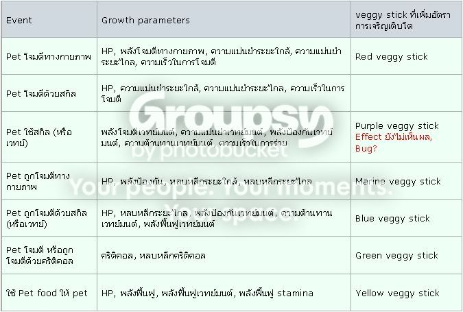

หน้า 2 จากทั้งหมด 11

โพสต์แล้ว:
เสาร์ 06 ก.ย. 2008 3:34 pmโดย ECO
kittiya เขียน:แหะๆ :oops: รั่วค่ะ ไม่ได้ใช้ENGนาน เอาน่าๆๆ ช่างมันเต๊อะ เด๋วก็เสร็จแล้ว =x=
อ่าสู้ๆคร้าบ

โพสต์แล้ว:
เสาร์ 06 ก.ย. 2008 3:43 pmโดย ECO
อ่าแง้ว =w= ใครมีTipsอะไรดีๆ ก็บอกกันได้ค่ะ
โพสต์แล้ว:
อาทิตย์ 07 ก.ย. 2008 9:00 pmโดย ECO
ขุดให้ +แก้ไขข้อมูลเพิ่มเติมเรื่องการอัพ stat ของ pet
จาก

เป็น

แถมข้อมูล veggy stick ที่จะได้จากการส่งคีตินน่ะ เผื่อจะกระตุ้นให้คนส่งมากขึ้น
โพสต์แล้ว:
จันทร์ 08 ก.ย. 2008 7:35 amโดย ECO
ขอบคุณค่า =w= แก้แว้วน้า
โพสต์แล้ว:
จันทร์ 08 ก.ย. 2008 10:11 amโดย ECO
มาเป็นกำลังใจให้นะครับ สู้ๆ :lol:
โพสต์แล้ว:
จันทร์ 08 ก.ย. 2008 10:28 amโดย ECO
ป้อจะมาเป็นหัวหน้าวินหนอนซิ่งคนใหม่สินะ:P...
แมวก็มีแล้ว หนอนก็มีแล้ว ไปตั้งกระทู้ฟาร์มหมาอีกคนดีมั้ยหว่า :oops: ...
โพสต์แล้ว:
จันทร์ 08 ก.ย. 2008 1:39 pmโดย ECO
No one เขียน:ป้อจะมาเป็นหัวหน้าวินหนอนซิ่งคนใหม่สินะ:P...
แมวก็มีแล้ว หนอนก็มีแล้ว ไปตั้งกระทู้ฟาร์มหมาอีกคนดีมั้ยหว่า :oops: ...
5555+
แล้วอย่าลืม นก กับ พวกนักล่า แล้วก็ ปืนด้วยนะคะ =w=
โพสต์แล้ว:
จันทร์ 08 ก.ย. 2008 1:49 pmโดย ECO
ใครเล่น Bard ลองใช้สกิล Oratorio ควบคู่กับการฝึกดูนะ
กรณีที่ไม่สนค่า Hp Recovery จากการให้ Pet Food งิ
*ผลของสกิล Oratorio(คล้ายๆกับ Holy Feather ของ Druid) แต่จะเพิ่ม Hp 120 ทุกๆ 3 วิจ้า
โพสต์แล้ว:
จันทร์ 08 ก.ย. 2008 1:51 pmโดย ECO
^ขอบพระคุณมากๆค่ะ
editๆๆ
โพสต์แล้ว:
จันทร์ 08 ก.ย. 2008 4:20 pmโดย ECO
Konata เขียน:ใครเล่น Bard ลองใช้สกิล Oratorio ควบคู่กับการฝึกดูนะ
กรณีที่ไม่สนค่า Hp Recovery จากการให้ Pet Food งิ
*ผลของสกิล Oratorio(คล้ายๆกับ Holy Feather ของ Druid) แต่จะเพิ่ม Hp 120 ทุกๆ 3 วิจ้า
อ่า ว่าจะหาคนให้ถามพอดี
Oratorio มีผลเหมือน "heal หมู่" หรือพวก Heal Fire ของ Breeder หรือไม่?
คือ.... ใช้แล้ว mon จะหันมาตบ Bard ที่ร่ายหรือเปล่านิ?
เพราะ heal fire ตอนนี้ใช้ฝึก pet ได้ wanwan ไม่รับทานมาก จุดไป pet แห่มาตบสนุกสนานเลย
โพสต์แล้ว:
จันทร์ 08 ก.ย. 2008 4:22 pmโดย ECO
Oratorio ผลเหมือน holy feather 8)
ดังนั้นมอนไม่หัน ฝึกได้เนียนมากสำหรับ pet ที่มี def พอประมาณก็ออxx ได้เลย :lol:
โพสต์แล้ว:
จันทร์ 08 ก.ย. 2008 6:19 pmโดย ECO
โอ้ แบบนี้น่าสนใจปั่น bard มาฝึกแทน alchemist ซะแร้ว >w<~~
50 / 5sec (30 / 3 sec)
120 / 3 sec ..............
อูว ให้ลุงหนอนม่วงแกรุม 3 ตัวยัง hp ขึ้นทันเลยวุ้ย =A="
โพสต์แล้ว:
จันทร์ 08 ก.ย. 2008 6:48 pmโดย ECO
โอราโทริโอ ที่เลเวลmax (5มั้ง)
มันเพิ่ม 100hpนะงับ คุณหมานิม
แต่ไม่แน่ใจว่าทุกกี่วิ เพราะไม่ได้จับเวลา =A="
โพสต์แล้ว:
จันทร์ 08 ก.ย. 2008 6:49 pmโดย ECO
ดีจังสกิลนั้นอ่ะ ออ เพลินเลยทีนี้
โพสต์แล้ว:
จันทร์ 08 ก.ย. 2008 7:08 pmโดย ECO
โดยส่วนตัวเอา Druidไปฝึกค่ะ =x= มีHolyFeather สบายดี ถ้าเป็นอัลเชมิส มันใช้SPเวลาใช้HealingTree
Druid ติดเข็ม Breeder จุดไฟไม่ได้ เด๋วมอนตบเรา=x=
ปล. ตอนนี้ฝึกหนอนใหม่เริ่มรั่วค่ะ สิงอกเอา =x= ใครเจอเข็มบรีดเดอร์สิงอยู่ชั้น3เซิฟทาโกะก็นั่นล่ะ ข้าพเจ้า